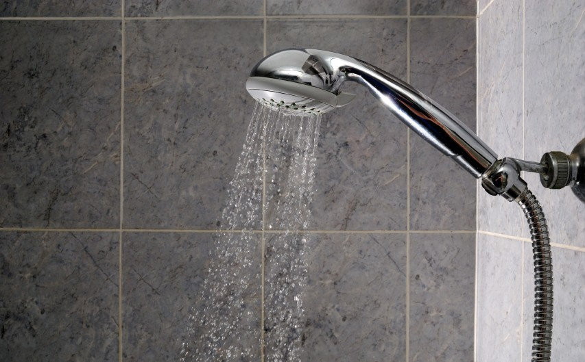
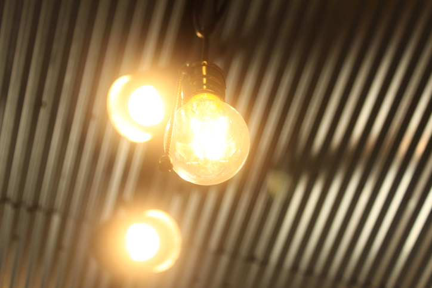

El agua es un recurso natural tan necesario como limitado. Se estima que en España, por persona y día, consumimos unos 150 litros de agua (según datos del INE para 2013). Una ducha de 15 minutos, por ejemplo, representa un consumo de más de 60 litros, o un lavado de manos, vajilla... de 1 minuto, requiere casi 4 litros de agua.
Medida: además de cerrar el grifo mientras nos enjabonamos o nos cepillamos los dientes, en la ducha, podemos ahorrar entre 5 y 10 litros de agua si, por ejemplo, mientras esperamos que salga agua caliente, aprovechamos el resto de agua fría para llenar el cubo de fregar los suelos o la regadera si tenemos plantas en casa.

No es solo una preocupación ambiental la que nos ha de llevar a tener más en cuenta el consumo de luz en nuestro hogar. La constante subida del precio de la electricidad ya es motivo por sí mismo suficiente para controlar nuestro gasto doméstico, y que en términos ambientales se puede traducir en una reducción de las fuentes de energía sucia (nucleares, térmicas...).
Medida: procurando tener encendidas únicamente las luces necesarias, sustituir las bombillas tradicionales o incandescentes por bombillas de bajo consumo o LED, desconectar los electrodomésticos que no estemos usando o emplear enchufes con botón de encendido y apagado general puede ahorrarnos hasta un 20% en nuestra factura eléctrica, ¡con los beneficios ambientales que supone este ahorro!
